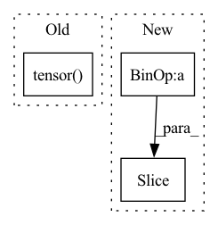

Pattern ID :4301

Before Change
embeddings = np.zeros([len(carray), embedding_size])
with torch.no_grad():
while idx + batch_size <= len(carray):
batch = torch.tensor(carray[idx:idx + batch_size][:, [2, 1, 0], :, :])
if tta:
ccropped = ccrop_batch(batch)
fliped = hflip_batch(ccropped)
emb_batch = backbone(ccropped.cuda()).cpu() + backbone(fliped.cuda()).cpu()
After Change
emb_batch = backbone(cropped.cuda()).cpu() + backbone(flipped.cuda()).cpu()
embeddings[idx:idx + batch_size] = l2_norm(emb_batch)
else:
ccropped = carray[0][idx:idx + batch_size]
embeddings[idx:idx + batch_size] = l2_norm(backbone(ccropped.cuda())).cpu()
idx += batch_size
if idx < shape[0]:
In pattern: SUPERPATTERN
Frequency: 3
Non-data size: 3
Instances
Fragment ID: 15811697
Project Name: cavalleria/cavaface
Commit Name: d4fa28736b74b61b2c4272dc60254741057225c2
Time: 2020-11-25
Author: 605370459@qq.com
File Name: util/utils.py
M Class Name: AnonimousClass
N Class Name: AnonimousClass
M Method Name: perform_val(7)
N Method Name: perform_val(7)
M Parent Class:
N Parent Class:
M File Name: util/utils.py
N File Name: util/utils.py
M Start Line: 126
M End Line: 148
N Start Line: 118
N End Line: 140
'>
Before Change
t = x.shape[1]
dims = (len(x.shape) - dim) * (0, 0)
padded_x = F.pad(x, (*dims, backward, forward), value = pad_value)
tensors = tensor_iterator_wrapper(padded_x, torch.tensor(t), torch.tensor(forward), torch.tensor(backward))
return torch.cat(tensors, dim=dim)
// helper classes
After Change
t = x.shape[1]
dims = (len(x.shape) - dim) * (0, 0)
padded_x = F.pad(x, (*dims, backward, forward), value= pad_value)
tensors = [padded_x[:, ind:(ind + t), ...] for ind in range(forward + backward + 1)]
return torch.cat(tensors, dim=dim)
// helper classes
'>
Fragment ID: 15811696
Project Name: lucidrains/sinkhorn-transformer
Commit Name: 466aa2845d261fb545489b3bdfe26ed53ebbf296
Time: 2020-04-15
Author: lucidrains@gmail.com
File Name: sinkhorn_transformer/sinkhorn_transformer.py
M Class Name: AnonimousClass
N Class Name: AnonimousClass
M Method Name: look_around(5)
N Method Name: look_around(5)
M Parent Class:
N Parent Class:
M File Name: sinkhorn_transformer/sinkhorn_transformer.py
N File Name: sinkhorn_transformer/sinkhorn_transformer.py
M Start Line: 136
M End Line: 139
N Start Line: 129
N End Line: 132
'>
Before Change
image_token = self.start_token
for i in range(self.sample_token_count):
token_index = torch.tensor([i]).to(torch.long)
// if torch.cuda.is_available(): token_index = token_index.cuda()
probs, keys_values_state = self.decode_step(
text_tokens = text_tokens,
After Change
image_token = self.start_token
for i in range(self.sample_token_count):
token_index = self.token_indices[i:i+1]
probs, keys_values_state = self.decode_step(
text_tokens = text_tokens,
encoder_state = encoder_state,
'>
Fragment ID: 15811685
Project Name: kuprel/min-dalle
Commit Name: 17c96fe110fad3d48ea591dcd46475f521499770
Time: 2022-06-28
Author: brkuprel@gmail.com
File Name: min_dalle/models/dalle_bart_decoder_torch.py
M Class Name: DalleBartDecoderTorch
N Class Name: DalleBartDecoderTorch
M Method Name: forward(3)
N Method Name: forward(3)
M Parent Class: nn.Module
N Parent Class: nn.Module
M File Name: min_dalle/models/dalle_bart_decoder_torch.py
N File Name: min_dalle/models/dalle_bart_decoder_torch.py
M Start Line: 205
M End Line: 222
N Start Line: 206
N End Line: 212